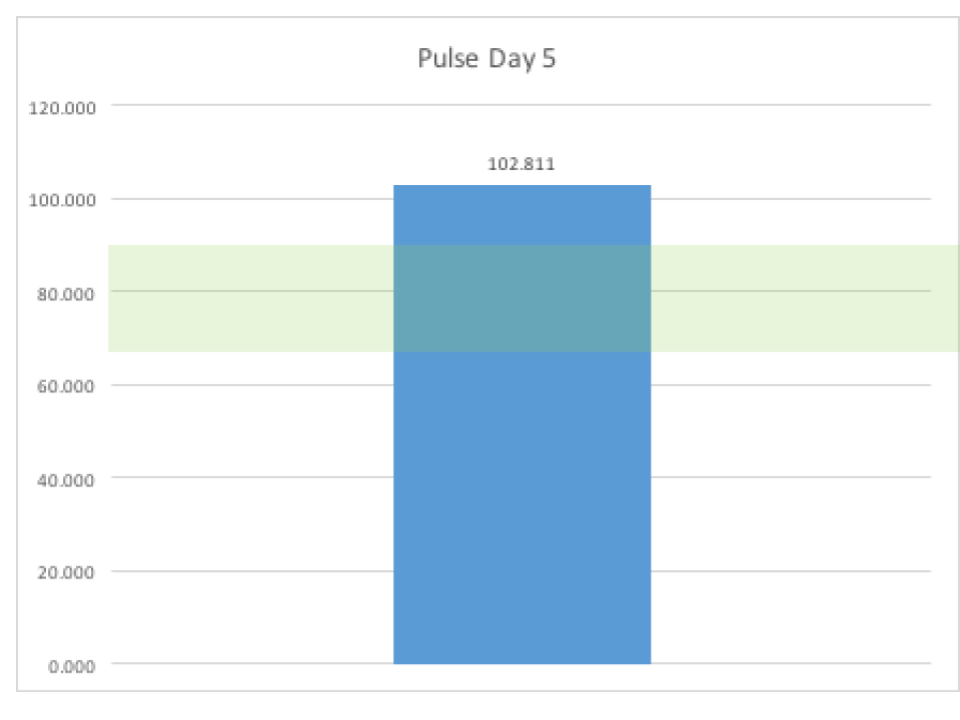

VIDSS will show how average vital sign readings differ from normal ranges. Is your patient experiencing a rapid heart rate? For how long? And how fast is ‘rapid’? VIDSS will show you a simple graphic that expresses your patients average daily heart rate and the distance it is from normal.

VIDSS will show how average vital sign readings change from day to day. In trying to assess your patient’s overall condition over the next few days, you will invariably want to know what the vital sign readings were over the past few days. VIDSS can show that to you. The below chart shows a patient whose pulse is moving more into the normal range.